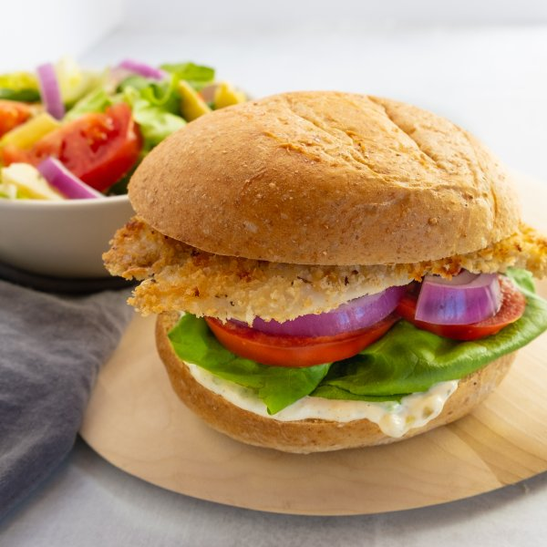

Crispy Fish Sandwich with Garlic-Tartar Sauce & Side Salad

Total Time
40 min
Nutrition (Per Serving)
687.1 kcalCalories
49.4 gProtein
48.5 gCarbs
34.3 gFat
Full nutrition table
| Calories | 687.1 kcal |
| Total fat | 34.3 g |
| Saturated fat | 6.3 g |
| Trans fat | 0.5 g |
| Cholesterol | 180.6 mg |
| Sodium | 648.1 mg |
| Carbohydrates | 48.5 g |
| Fiber | 9.7 g |
| Sugars | 11.9 g |
| Protein | 49.4 g |
| Potassium | 1367.7 mg |
| Calcium | 171.5 mg |
| Iron | 5.3 mg |
| Vitamin A | 1214.1 IU |
| Vitamin C | 26.3 mg |
| Vitamin D | 231.7 IU |
Cookware
Ingredients
- 2 (6 oz) jarsartichoke hearts, marinated
- 2 headsbutter (Boston) lettuce
- 1 tbspcapers
- 2eggs
- 2 clovesgarlic
- ½ mediumred onion
- 1 ½ lbtilapia fillet
- 4tomatoes
- 4whole grain buns or rolls
- all-purpose flour
- black pepper
- Dijon mustard
- extra virgin olive oil
- mayonnaise
- panko bread crumbs
- pure maple syrup
- salt
- white wine vinegar
Steps
- Peel and mince garlic; mince capers. Transfer both to a small bowl along with mayo, vinegar, Dijon, and pepper. Whisk to combine the tartar sauce; set aside.2 cloves garlic
1 tbsp capers
⅓ cup mayonnaise
2 tsp white wine vinegar
2 tsp Dijon mustard
⅛ tsp black pepper - Combine oil, vinegar, Dijon, maple syrup, salt, and pepper in a large salad bowl; whisk to combine the dressing.4 tsp extra virgin olive oil
4 tsp white wine vinegar
1 tsp Dijon mustard
1 tsp pure maple syrup
¼ tsp salt
¼ tsp black pepper - Peel and thinly slice onion into half rounds. Set half of the onions aside on a plate. Add the other half to the bowl with the dressing and stir to combine.½ medium red onion
- Wash and dry the tomatoes, then halve and slice them. Place half of the tomatoes on the plate; transfer the other half to the salad bowl.4 tomatoes
- Drain and thinly slice artichoke hearts; transfer to the salad bowl. Set aside while you prepare the fish.2 (6 oz) jars artichoke hearts, marinated
- Whisk eggs in a medium bowl.2 eggs
- Place bread crumbs in a second medium bowl.1 cup panko bread crumbs
- Pat the fish dry with paper towels and place on a plate or other flat surface. Season with salt and pepper on both sides.1 ½ lb tilapia fillet
½ tsp salt
½ tsp black pepper - Sprinkle flour over both sides of each fillet. Press gently to adhere.2 tbsp all-purpose flour
- Preheat a large nonstick skillet over medium heat.
- To bread the fish, dip each fillet into the egg, and then the bread crumbs. Press gently to adhere.
- Once the skillet is hot, add oil and swirl to coat the bottom. Working in batches if necessary, add fish to the skillet in a single layer and cook until golden brown and cooked through, about 4 minutes per side. Once done, transfer to a clean plate lined with paper towel.4 tsp extra virgin olive oil
- Meanwhile, toast the rolls.4 whole grain buns or rolls
- Wash and dry the lettuce; separate the leaves. Set aside 2 large leaves per sandwich. Chop or tear remaining leaves into bite-sized pieces, add to the salad bowl and toss to combine.2 heads butter (Boston) lettuce
- Place the bottom half of a roll on each plate. Layer with tartar sauce, lettuce, tomato, onion, and a crispy fish fillet; close with top half of the roll. Serve salad on the side and enjoy!